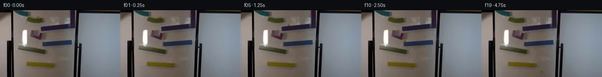

![首帧]()

Round 00
2026-11-05T11:17:20.214722+00:00像素候选变化代码 +247/−0inspection 更新
pixels 1dbbec516a8f7af5 · code 3ca51e9f2662284f
查看本轮 generate.py 真实 diff
--- previous/generate.py
+++ current/generate.py
@@ -0,0 +1,247 @@
+"""Local source-pixel continuation; no models, renderer, or external assets."""
+from pathlib import Path
+import json
+import math
+import hashlib
+import numpy as np
+from PIL import Image, ImageDraw
+from artifact_io import save
+
+ROOT = Path(__file__).resolve().parent
+G = 850.0
+R = 2.60
+segments = []
+
+
+def add_segment(name, duration, position, velocity):
+ start = segments[-1]['end'] if segments else 0.0
+ segments.append(dict(name=name, start=start, end=start+duration,
+ position=position, velocity=velocity))
+ return position(duration), velocity(duration)
+
+
+def roll(name, p, vx, slope, end_x):
+ # Effective rolling acceleration for a sphere, with image-space gravity.
+ a = (5.0/7.0)*G*slope/(1+slope*slope)
+ roots = np.roots([0.5*a, vx, p[0]-end_x])
+ duration = max(float(r.real) for r in roots if abs(r.imag)<1e-8 and r.real>0)
+ def position(t):
+ x = p[0]+vx*t+0.5*a*t*t
+ return np.array([x, p[1]+slope*(x-p[0])])
+ def velocity(t):
+ return np.array([vx+a*t, slope*(vx+a*t)])
+ return add_segment(name, duration, position, velocity)
+
+
+def fall(name, p, v, target_slope, target_intercept):
+ # Exact intersection of the ballistic center path with a ramp center line.
+ b = v[1]-target_slope*v[0]
+ c = p[1]-target_slope*p[0]-target_intercept
+ duration = (-b+math.sqrt(b*b-2*G*c))/G
+ def position(t):
+ return p+v*t+np.array([0.0, 0.5*G*t*t])
+ def velocity(t):
+ return v+np.array([0.0, G*t])
+ return add_segment(name, duration, position, velocity)
+
+
+def catch(p, incoming):
+ # A short dissipative contact with the pink curved guide. Its constrained
+ # cubic path redirects the incoming marble toward the guide's outlet.
+ duration = 0.34
+ q = np.array([90.5, 61.0])
+ vi = np.array([-32.0, 8.0])
+ vo = np.array([16.0, 8.0])
+ def position(t):
+ u = t/duration
+ return ((2*u**3-3*u*u+1)*p+(u**3-2*u*u+u)*duration*vi
+ +(-2*u**3+3*u*u)*q+(u**3-u*u)*duration*vo)
+ def velocity(t):
+ u = t/duration
+ return (((6*u*u-6*u)*p+(-6*u*u+6*u)*q)/duration
+ +(3*u*u-4*u+1)*vi+(3*u*u-2*u)*vo)
+ return add_segment('pink curved catcher', duration, position, velocity)
+
+
+def motion():
+ p = np.array([78.6, 15.4])
+ p, v = roll('top green tray', p, 14.0, 0.045, 90.0)
+ m = -7.0/63.0
+ b = 33.4-m*87
+ p, v = fall('fall to upper dotted ramp', p, v, m, b)
+ p, v = roll('upper dotted ramp', p, v[0], m, 86.0)
+ p, v = fall('fall to pink catcher', p, v, 0.3, 52.6-0.3*75)
+ p, v = catch(p, v)
+ m = -5.0/62.0
+ b = 66.4-m*90
+ p, v = fall('fall to blue ramp', p, v, m, b)
+ p, v = roll('blue ramp', p, v[0], m, 89.5)
+ m = 10.0/58.0
+ b = 73.4-m*40
+ p, v = fall('fall to lower green ramp', p, v, m, b)
+ p, v = roll('lower green ramp', p, v[0], m, 98.0)
+ m = 3.0/57.0
+ b = 108.4-m*57
+ p, v = fall('fall to yellow ramp', p, v, m, b)
+ assert 57 <= p[0] <= 114, ('Missed yellow ramp', p)
+ p, v = roll('yellow ramp', p, v[0], m, 114.0)
… diff truncated; 160 more lines …